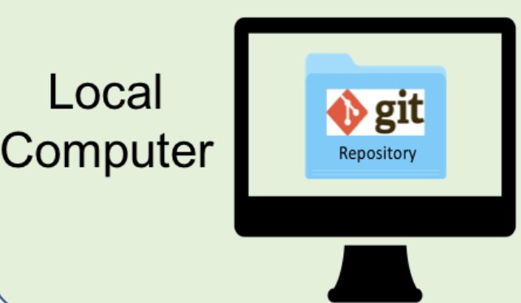
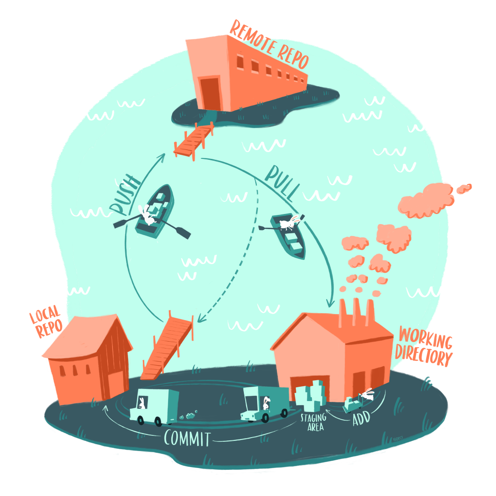
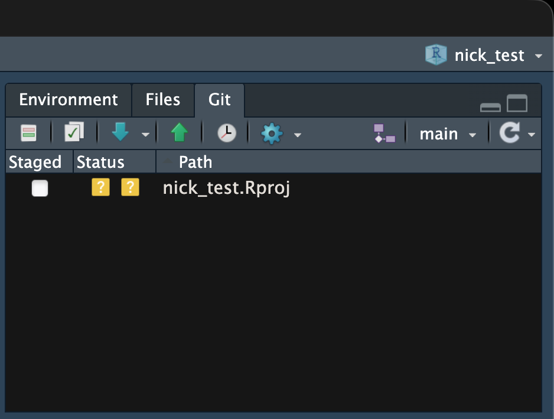
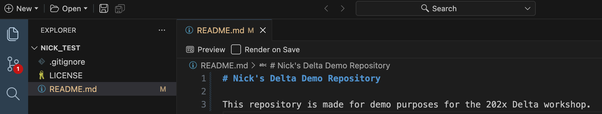
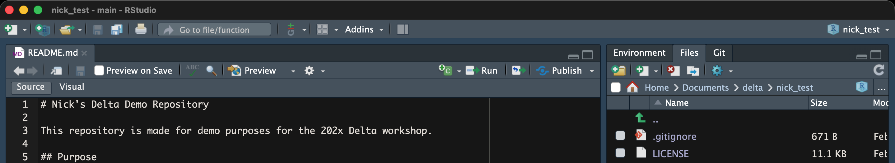
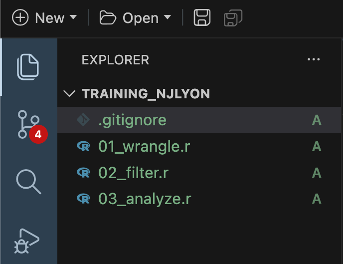
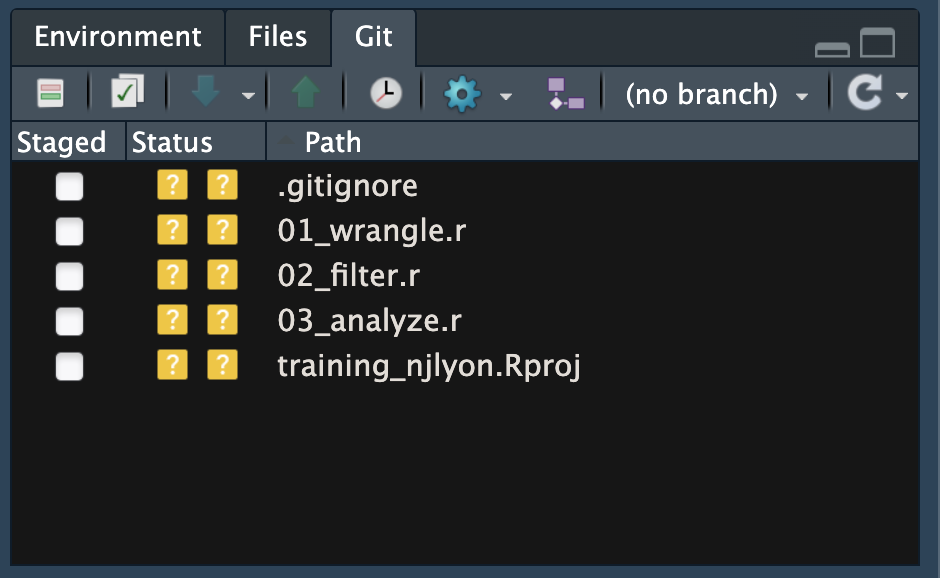

1 Introduction to Version Control
{kind=link}
Every file changes throughout the scientific process. Manuscripts are edited. Figures get revised. Code gets fixed when bugs are discovered. Sometimes those fixes lead to even more bugs, leading to more changes in the code base. Data files get combined. Those same files are split and combined again. In just one research project, we can expect thousands of changes!
These changes are important to track, and yet, we often use simplistic file names to do so. Many of us have experienced renaming a document or script multiple times with the disingenuous addition of “final” to the file name.
A better way: version control
Version control provides an organized and transparent way to track changes in code and files. This practice was designed for software development, but is easily applicable to scientific programming.
Benefits to using a version control software include:
- Maintain a history of project development while keeping your workspace clean
- Facilitate collaboration and transparency when working on teams
- Explore bugs or new features without disrupting your team’s work
- and more!
The version control system we’ll be diving into is Git, the most widely used modern version control system in the world.
2 Introduction to Git & GitHub
Let’s start with a motivating example that’s representative of the types of problems Git can help us solve.
With Git we can enhance our workflow:
- Eliminate the need for cryptic filenames and comments to track our work.
- Provide detailed descriptions of our changes through commits, making it easier to understand the reasons behind code modifications.
- Work on multiple branches simultaneously, allowing for parallel development, and optionally merge them together.
- Use commits to access and even execute older versions of our code.
- Assign meaningful tags to specific versions of our code.
- Multiple individuals can work on the same analysis concurrently on their own computers, with the ability to merge everyone’s changes together.
2.1 What Exactly are Git and GitHub?
Git is an open-source version control software

- designed to manage the versioning and tracking of files and project history
- operates locally on your computer, allowing you to create repositories and track changes
- provides features such as committing changes, branching and merging code, reverting to previous versions, and managing project history
- works directly with the files on your computer and does not require a network connection for most operations
- primarily used through the command-line interface (CLI, e.g. Terminal), but also has various GUI tools available (e.g. Positron IDE)
GitHub is an online platform and service built around Git

- provides a centralized hosting platform for Git repositories
- allows us to store, manage, and collaborate on Git repositories in the cloud
- offers additional features on top of Git, including a web-based interface, issue tracking, project management tools, pull requests, code review, and collaboration features
- enables easy sharing of code with others, facilitating collaboration and contribution to open source projects
- provides a social aspect, allowing users to follow projects, star repositories, and discover new code
2.2 How Local Files, Git, and GitHub Work Together
It can be daunting to understand the moving parts of the Git / GitHub life cycle (i.e. how file changes are tracked locally within repositories, then stored for safe-keeping and collaboration on remote repositories, then brought back down to a local machine(s) for continued development). It gets easier with practice, but here’s a high-level overview of how things work:
2.2.1 What is the Difference Between a “Normal” Folder and a Git Repository?
Let’s pretend that we create a folder, called myFolder/, and add two files: myData.csv and myAnalysis.R. The contents of this folder are not currently version-controlled – meaning, for example, that if we make changes to myAnalysis.R that don’t work out, we have no way of accessing or reverting back to a previous version of myAnalysis.R (without remembering or rewriting things, of course).
Git allows you to turn any “normal” folder, like myFolder/, into a Git repository – this is often referenced as “initializing a Git repository”. When you initialize a folder on your local computer as a Git repository, a hidden .git/ folder is created within that folder (e.g. myFolder/.git/). This .git/ folder is the Git repository.
As you use Git commands to capture versions or “snapshots” of your work, those versions (and their associated metadata) get stored within the .git/ folder. This allows you to access and/or recover any previous versions of your work. If you delete .git/, you delete your project’s history.
Here is our example folder / Git repository represented visually:

2.2.2 How Do I Tell Git to Preserve Versions of My Local Working Files?
Git was built as a command-line tool, meaning we can use Git commands in the command line (e.g. Terminal, Git Bash, etc.) to take “snapshots” of our local working files. Alternatively, Positron provides buttons that easily execute these Git commands.
Generally, that workflow looks something like this:
- Make changes to a file(s) (e.g.
myAnalysis.R) in your working directory. - Stage the file(s) using
git add myAnalysis.R(orgit add .to stage multiple changed files at once). This lets Git know that you’d like to include the file(s) in your next commit. - Commit the file(s) using
git commit -m "a message describing my changes". This records those changes (along with a descriptive message) as a “snapshot” or version in the local repository (i.e. the.git/folder).
2.2.3 How Do I Send Work From My Local Computer to GitHub?
The last step is synchronizing the changes made to our local repository with a remote repository (this remote repository is often stored on GitHub). The git push command is used to send local commits up to a remote repository. The git pull command is used to fetch changes from a remote repository and merge them into the local repository – pulling will become a regular part of your workflow when collaborating with others, or even when working alone but on different machines (e.g. a laptop at home and a desktop at the office).
{kind=link}

2.3 Let’s Look at a GitHub Repository
This screen shows the copy of a repository stored on GitHub, with its list of files, when the files and directories were last modified, and some information on who made the most recent changes.
{kind=link}
If we drill into the “commits” for the repository (by clicking the “Commits” button just beneath the colored “Code” dropdown menu), we can see the history of changes made within this repository, including the author, date, and commit message for each commit.
{kind=link}
And finally, if we drill into a particular commit, we can see exactly what was changed in each file that was included in that commit:
{kind=link}
Tracking these changes, how they relate to released versions of software and files is exactly what Git and GitHub are good for. And we will show how they can really be effective for tracking versions of scientific code, figures, and manuscripts to accomplish a reproducible workflow.
2.4 Git Vocabulary & Commands
We know the world of Git and GitHub can be daunting. Use these tables as references while you use Git and GitHub, and we encourage you to build upon this list as you become more comfortable with these tools.
This table contains essential terms and commands that complement intro to Git skills. They will get you far on personal and individual projects.
| Term | Git Command(s) | Definition |
|---|---|---|
| Add/Stage | git add [file] |
Staging marks a modified file in its current version to go into your next commit snapshot. You can also stage all modified files at the same time using git add . |
| Commit | git commit |
Records changes to the repository |
| Commit Message | git commit -m "my commit message" |
Records changes to the repository and include a descriptive message (you should always include a commit message!) |
| Fetch | git fetch |
Retrieves changes from a remote repository but does not merge them into your local working file(s). |
| Pull | git pull |
Retrieves changes from a remote repository and merges them into your local working file(s) |
| Push | git push |
Sends local commits to a remote repository |
| Status | git status |
Shows the current status of the repository, including (un)staged files and branch information |
This table includes more advanced Git terms and commands that are commonly used in both individual and collaborative projects.
| Term | Git Command(s) | Definition |
|---|---|---|
| Branch | git branch |
Lists existing branches or creates a new branch |
| Checkout | git checkout [branch] |
Switches to a different branch or restores files from a specific commit |
| Clone | git clone [repository] |
Creates a local copy of a remote repository |
| Diff | git diff |
Shows differences between files, commits, or branches |
| Log | git log |
Displays the commit history of the repository |
| Merge | git merge [branch] |
Integrates changes from one branch into another branch |
| Rebase | git rebase |
Integrates changes from one branch onto another by modifying commit history |
| Remote | git remote |
Manages remote repositories linked to the local repository |
| Repository | git init |
A directory where Git tracks and manages files and their versions |
| Stash | git stash |
Temporarily saves changes that are not ready to be committed |
| Tag | git tag |
Assigns a label or tag to a specific commit |
Git has a rich set of commands and features, and there are many more terms beyond either table. Learn more by visiting the Git documentation.
This table includes terms for which there are not specific Git commands.
| Term | Definition |
|---|---|
| Sync | Fetches, merges, and pushes (in that order) commits to/from a local repository |
| Fork | Creates a personal copy of a repository under your GitHub account for independent development |
| Merge Conflict | Occurs when Git cannot automatically merge changes from different branches, requiring manual resolution |
| Pull Request (PR) | A request to merge changes from a branch into another branch, typically in a collaborative project |
3 Exercise 1: Create a Remote Repository on GitHub
- Login to GitHub
- Click the New repository button
- Name it
{firstname}_test - Add a short description
- Check the box to add a
README.mdfile - Add a
.gitignorefile using theRtemplate - Set the
LICENSEto Apache 2.0
If you were successful, it should look something like this:
{kind=link}
{kind=link}
You’ve now created your first repository! It has a couple of files that GitHub created for you: README.md, LICENSE, and .gitignore.
README.md files are used to share important information about your repository
You should always add a README.md to the root directory of your repository – it is a markdown file that is rendered as HTML and displayed on the landing page of your repository. This is a common place to include any pertinent information about what your repository contains, how to use it, etc.
{kind=link}
3.1 Edit a File in Your Repository
For simple changes to text files, such as the README.md, you can make edits directly in the GitHub web interface.
{kind=link}
Congratulations, you’ve now authored your first versioned commit! If you navigate back to the GitHub page for the repository, you’ll see your commit listed there, as well as the rendered README.md file.
{kind=link}
3.2 The GitHub Repository Landing Page
The GitHub repository landing page provides us with lots of useful information. To start, we see:
- all of the files in the remote repository
- when each file was last edited
- the commit message that was included with each file’s most recent commit (which is why it’s important to write good, descriptive commit messages!)
Additionally, the header above the file listing shows the most recent commit, along with its commit message, and a unique ID (assigned by Git) called a SHA. The SHA (aka hash) identifies the specific changes made, when they were made, and by who. If you click on the SHA, it will display the set of changes made in that particular commit.
Writing effective Git commit messages is essential for creating a meaningful and helpful version history in your repository. It is crucial to avoid skipping commit messages or resorting to generic phrases like “Updates.” When it comes to following best practices, there are several guidelines to enhance the readability and maintainability of the codebase.
Here are some guidelines for writing effective Git commit messages:
- Be descriptive and concise: Provide a clear and concise summary of the changes made in the commit. Aim to convey the purpose and impact of the commit in a few words.
- Use imperative tense: Write commit messages in the imperative tense, as if giving a command. For example, use “Add feature” instead of “Added feature” or “Adding feature.” This convention aligns with other Git commands and makes the messages more actionable.
- Separate subject and body: Start with a subject line, followed by a blank line, and then provide a more detailed explanation in the body if necessary. The subject line should be a short, one-line summary, while the body can provide additional context, motivation, or details about the changes.
- Limit the subject line length: Keep the subject line within 50 characters or less. This ensures that the commit messages are easily scan-able and fit well in tools like Git logs.
- Capitalize and punctuate properly: Begin the subject line with a capital letter and use proper punctuation. This adds clarity and consistency to the commit messages.
- Focus on the “what” and “why”: Explain what changes were made and why they were made. Understanding the motivation behind a commit helps future researchers and collaborators (including you!) comprehend its purpose.
- Use present tense for subject, past tense for body: Write the subject line in present tense as it represents the current state of the codebase. Use past tense in the body to describe what has been done.
- Reference relevant issues: If the commit is related to a specific issue or task, include a reference to it. For example, you can mention the issue number or use keywords like “Fixes,” “Closes,” or “Resolves” followed by the issue number.
4 Exercise 2: Clone Your Repository Locally
Currently, our repository just exists on GitHub as a remote repository. It’s easy enough to make changes to things like our README.md file (as demonstrated above) from the web browser, but that becomes a lot harder (and discouraged) for scripts and other code files. In this exercise, we’ll bring a copy of this remote repository down to our local computer (aka clone this repository) so that we can work comfortably in our local computer.
We refer to the remote copy of the repository that is on GitHub as the origin repository (the one that we cloned from), and the copy on our local computer as the local repository.
To clone our remote repository, we’ll use an IDE (Integrated Development Environment). This is a fancy term for any piece of software that lets you write software. You may already be familiar with some IDEs like RStudio, Positron, or Visual Studio Code. We offer courses that focus either in Positron or RStudio so you may be using either in your training. In the steps below, follow the instructions for the IDE suggested by your instructors.
4.1 Initial Clone
Positron makes working with Git and version-controlled files easy! To do so, you’ll need to tell Positron the folder in which you want it to clone your origin repository.
- Start by copying the link to your GitHub repository from the address bar of your web browser
- Should be something like
https://github.com/github-username/repository-name
- Should be something like
- Click the folder icon in the top right corner of Positron
- Select New Folder from Git…
- In the Git repository URL field, paste in the link you copied in step 1
- Choose which folder you want to clone this repository to
- We recommend not cloning into a local sync of a cloud storage service (e.g., OneDrive, Dropbox) as that service’s form of version control and Git’s may cause problems for you
- Click OK
{kind=link}
Once you click OK, your Positron window will refresh and the “Explorer” tab (in the left sidebar) will show that all files from the remote repository have been copied locally. Note that the folder icon in the top right corner will now have the name of your repository from GitHub.
{kind=link}
If you click the “Source Control” tab (its symbol looks like this: ) you will see that there are no changes because we haven’t done anything to the local copy yet! However, both the commits (the initial commit and the test edit made directly in GitHub) are shown in the bottom left corner in reverse chronological order (i.e., most recent at the top).
{kind=link}
We can actually interact with particular commits to get more detailed information on what was changed directly through Positron! Click the top commit to expand it and see the files that were changed as part of that commit. Now click the README file (the only one edited as part of that commit). A file will now open in the main window of Positron showing the README file with new lines highlighted in green and deleted lines highlighted in red.
{kind=link}
RStudio makes working with Git and version-controlled files easy! To do so, you’ll need to create a new R Project.
Start by clicking the Code button on your GitHub repository and copying the link from under the HTTPS field.
{kind=link}
Click the project icon (looks like the letter “R” in a glass box) in the top right corner of RStudio. Note that if you use RStudio projects already, that button will have the name of the most recent project but if you don’t use them it will instead say “Project: (None)”. In the resulting dropdown, click New Project…
{kind=link}
You will now be guided through a set of new project options. Click Version Control, then click Git. The next dialog is the critical one for getting your local clone set up.
In this dialog, do the following:
- Paste the link you copied from your remote repository into the Repository URL field
- Enter the name you want for the folder containing your local repository
- Feel free to just re-use the name of the repository
- Finally, choose which folder you want to clone this repository to
- We recommend not cloning into a local sync of a cloud storage service (e.g., OneDrive, Dropbox) as that service’s form of version control and Git’s may cause problems for you
Once that’s all done, click Create Project.
{kind=link}
After a moment, your RStudio will refresh and you’ll see the name you gave to your local repository’s folder in the top right corner next to the project icon.
{kind=link}
You may also notice that you have a new tab in RStudio labeled Git. Click that tab. You’ll see that you have your .Rproj file listed with two yellow question marks. RStudio uses this file to define an R Project but because it isn’t in your remote repository, Git is flagging it for your attention as a file that is in the tracked folder but is not itself tracked. Ignore this for now as we’ll get to more on it later.

If you click the “History” button in the Git tab (its symbol is a clock ) you will see all of the commits that have been made in this repository. They are shown in the top half of the window in reverse chronological order (i.e., most recent at the top).
We can actually interact with particular commits to get more detailed information on what was changed directly through RStudio! Click the top commit to expand it and see the files that were changed as part of that commit. The bottom half of the window will now show the README file with new lines highlighted in green and deleted lines highlighted in red.
{kind=link}
4.2 Making a Commit
Now that we have seen the changes from the past, let’s go ahead and make some new changes in our IDE. Close the history file we had open then open the actual README.md file.
Go to “File Explorer” tab and double click the README file to open it.
Go to the “Files” pane and click the README to open it.
While adding the purpose statement was nice addition, the top of the README is still looking very template-y, let’s customize it a bit. Go ahead and (1) give the README a more informative title and (2) expand the first line of the description to add some more context. After you’ve done this your README should look something like the following.
Positron 
{kind=link}
RStudio 
{kind=link}
Note that once you edit and save the README, the file’s name (both in the Explorer tab list and in the top of Positron) will turn orange and have a capital “M” to the right of the filename. This is Git letting you know that the file has been modified from the most recent version. Additionally, the Source Control tab will get a red circle with a “1,” indicating that the state of one file in the version controlled repository has changed.
If you head over to the Source Control tab, you’ll see that the README now appears under the “Changes” list.
{kind=link}
Once you are there, hover your mouse over the README and a plus sign button will appear, click it. Note that the button is not visible unless your mouse is over some part of the “Changes” list. Clicking that button is analogous to using the Git command, git add README.md, in the command line.
After you click the plus sign, the README will move under a new list titled “Staged Changes”. You can now add a commit message and then click the “Commit” button when you’re ready to do so. This is analogous to using the Git command, git commit -m "my commit message", in the command line.
{kind=link}
Once you do that, a few things will happen simultaneously:
- The “Commit” button will automatically change into a “Sync Changes” button.
- Both the “Changes” and “Staged Changes” lists will disappear
- The README file tab will go back to the default color and the “M” next to it will vanish
- The commit history diagram in the bottom left corner will show your new commit (in a different color than the prior commits)
{kind=link}
Go ahead and click the Sync button. It will become a grayed-out Commit button again and your commit history (bottom left) will go back to all being one color as the commit that was previously only on your local repository is synced with the remote repository.
{kind=link}
If you head over to the Git pane, you’ll see that the README now appears there with a blue “M”. That “M” stands for “modified”
{kind=link}
Once you are there, check the box next to the README under the “Staged” heading. Clicking that button is analogous to using the Git command, git add README.md, in the command line.
After you check the box, you can click either of the two left-most buttons in the Git pane. In the resulting pop-up menu (which looks imilar to the history menu), you can now add a commit message and then click the “Commit” button when you’re ready to do so. This is analogous to using the Git command, git commit -m "my commit message", in the command line.
{kind=link}
Once you do that, you can close this menu and two things should become apparent:
- The README is no longer listed in the Git pane
- There is a new message just beneath the buttons of the Git pane saying something like
Your branch is ahead of 'origin/main' by 1 commit.
This means that your commit worked!
{kind=link}
Go ahead and click the Pull button; it is a downward-facing blue arrow (). You should get a message that says Already up to date. This is because you’re working alone but when collaborating it is important to pull early and often to ensure that you’re working on the latest version of all files.
Now that you’ve pulled, you can click the Push button; it is an upward-facing green arrow (). This button will send your local commit ‘up’ to your remote repository.
If you navigate back to your remote repository on GitHub, you should see the edits to your README and the most recent commit will be the one you just made. Note that sometimes you have to refresh the page or wait a few seconds for those updates to be visible on GitHub.
{kind=link}
- Make a change to the
README.mdfile – this time from Positron – then commit theREADME.mdchange - Add a new section to your
README.mdcalled “Creator” using a level-2 header. Under it include some information about yourself. Bonus: Add some contact information and link your email using Markdown syntax.
5 Exercise 3: Starting Git on an Existing Folder
There are a number of different workflows for creating version-controlled repositories that are stored on GitHub. We started with Exercise 1 and Exercise 2 using one common approach: create a remote repository on GitHub first, then clone that repository to your local computer. However, you may find yourself in the situation where you have an existing folder of content that you want to start tracking with Git and host in GitHub.
There are a few approaches for connecting an existing local folder to Git/GitHub but the folks at Posit have developed some useful tools to streamline this. The task is slightly different between RStudio and Positron IDEs.
In this last exercise, we will practice this workflow using your training_{username} folder.
Open the Folder in Positron
Switch to your training_{username} folder using the dropdown menu in the top right corner ( Positron: “folder”. Click the dropdown next to your current folder name ({firstname}_test), and then select training_{username} from the list of recent folders you’ve opened in Positron. If you’ve never opened the training_{username} folder with Positron, click Open Folder….
In this example, there are some existing scripts whose names reflect steps in a typical code workflow. Your own project will likely look different, but have some files and maybe some folders.
{kind=link}
Initialize Git
Now that we’re in the right folder in Positron, switch to the Terminal pane and run the following commands:
git init- This initializes the current folder/directory to be Git-enabled (by creating a.gitfolder inside). It will return a message saying something likeInitialized empty Git repository in...followed by the absolute path to your chosen folder.git add --allorgit add .- this stages all your current files in the folder so Git knows to take a snapshot of them.git commit -m "initial commit"- this takes the snapshot of the current state of the files.
Connect local Git with remote GitHub
Here, go back to the Console pane - this next step is in R. We’ll use a tool from the usethis package to create a remote repository on GitHub (with the same name as the current folder) and push our initial commit out to GitHub.
usethis::use_github()(note,install.packages('usethis')if you don’t already have it installed!)- That’s it! You will see R go through a series of steps: create a GitHub repository, set remote origin, push main branch, and then optionally opening the URL to take you to your repository on GitHub.
Open Project in RStudio
Switch to your training_{username} folder using the dropdown menu in the top right corner ( RStudio: “folder”. Click the dropdown next to your current folder name ({firstname}_test), and then select training_{username} from the list of recent folders you’ve opened. If you’ve never opened the training_{username} folder with RStudio, click New Project…. Alternately, from the top menu, choose File > Open Project or File > New Project.
In this example, there are some existing scripts whose names reflect steps in a typical code workflow. Your own project will likely look different, but have some files and maybe some folders.
{kind=link}
Initialize Git and Connect to Remote
Make sure you are in the Console pane - these next step are in R. We’ll use tools from the usethis package to initialize the folder as a Git repository, then create a remote repository on GitHub (with the same name as the current folder) and push our initial commit out to GitHub.
usethis::use_git()(note,install.packages('usethis')if you don’t already have it installed!). This will walk through several steps, showing you the progress along the way:- set active project to the current project
- initialize the folder to be a Git repository (
git initper the commands noted above) - creates a
.gitignorefile (see more below) and adds a few file paths to that file. - identifies whether there are any uncommitted files and if so asks if you would like to commit them.
- When asked
Is it ok to commit them?choose the correct number for a yes/absolutely/affirmative response. This will:- stage the files (
git add --all) - commit them with a message (
git commit -m "initial commit") - ask if you’d like to restart.
- stage the files (
- When asked
Restart now?you can choose to restart (to see the Git pane) or not (it won’t break anything, you just won’t see the Git pane til you restart later) usethis::use_github()- That’s it! You will see R go through a series of steps: create a GitHub repository, set remote origin, push main branch, and then optionally opening the URL to take you to your repository on GitHub.
5.1 Tell Git What to Ignore
An absolutely critical component of version control with Git is what Git doesn’t track, not just what it does track. Git repositories each use a file called “.gitignore” to ‘decide’ what not to track. Most often, this is used to NOT track:
- large files
- files with sensitive information (e.g., passwords, private data).
Any file or folder named in the .gitignore won’t show up in the version control window of any IDE. This means that you don’t need to carefully avoid accidentally staging/committing a sensitive/large file, you can just have that file automatically be ignored by Git. Also, if you ever change your mind and do want to start tracking a file you had previously ignored, just delete the name of that file from the .gitignore and the previously ignored file will become available for staging/committing!
In our earlier exercises, we’ve started repositories in GitHub with the template “.gitignore” file for R users but there are some slight differences when adding Git tracking to an existing folder.
Positron does not add a “.gitignore” when you create a Git repository in that folder. So we’ll need to create one manually.
In the Terminal, follow the instructions below based on your computer’s operating system.
- For Mac / Linux users: run
touch .gitignore - For Windows users: run
copy NUL .gitignore- If
copy NULdoes not work, trytouchinstead
- If
RStudio does create a “.gitignore” when you create a Git repository in a project but it is very limited relative to what we’d get from the GitHub template for R. So we’ll need to flesh it out.
Once you have a “.gitignore” file:
- Open the file in your IDE as you would any other file
- Copy the code in the following code chunk (expand it) and paste into your .gitignore file
- Overwriting all current contents if there are any
- Save the file!
The .gitignore templates curated by GitHub are generally pretty good so copy/pasting that content will usually set you up for success. Note that as you work more with Git/GitHub, you may develop your own template for a .gitignore that ignores files or folders you consistently use across projects. In that case, feel free to copy that .gitignore’s content instead of the generic GitHub template for your coding language.
5.2 Double Check Git’s Status
Because we’re using the Terminal inside of Positron, we have some helpful visuals to know that things have been going smoothly. However, if you were following these instructions outside of an IDE, you wouldn’t have those handy graphical user interface (GUI) elements.
In that case you would want to run git status to make sure that the setup tasks you’ve taken so far are working as desired. If everything is going smoothly, you should get a message like the following:
On branch main
No commits yet
Untracked files:
(use "git add <file>..." to include in what will be committed)
.gitignore
01_wrangle.r
02_filter.r
03_analyze.r
nothing added to commit but untracked files present (use "git add" to track)5.3 Stage/Commit Your Files
Now that we’re confident Git is set up correctly, we want to start Git tracking on the files that are in our folder. In this case, because we want to track all the files, we can run git add . to stage all the files. If we only wanted to stage certain files, we could instead run git add 01_harmonize.r to stage one file at a time.
Without an IDE’s Graphical User Interface (GUI), we could again run git status if we want to check whether staging worked as desired.
Positron 
{kind=link}
RStudio 
{kind=link}
Once we’ve staged the files that we want to be included in this first commit, we can commit all staged files by running git commit -m "initial commit" in the Terminal. Note that it’s good practice to replace “initial commit” with something that is more informative and specific.
Without an IDE, you can run git log in the Terminal to see a history of your past commits. Here’s the log for this repository so far:
commit 49245b6433ba49fedb46d09e737e7d239837e11c (HEAD -> main)
Author: njlyon0 <{redacted}@gmail.com>
Date: Fri Feb 13 15:52:44 2026 -0500
feat: first commit of core scripts6 Go Further With Git
There’s a lot we haven’t covered in this brief tutorial. There are some great and much longer tutorials that cover advanced topics, such as:
- Resolving conflicts
- Branching and merging
- Pull requests versus direct contributions for collaboration
- Using GitHub issues for collaborative project management
and much, much more.
7 Git Resources
- Pro Git Book
- Happy Git and GitHub for the useR
- GitHub Documentation
- Learn Git Branching is an interactive tool to learn Git on the command line
- Software Carpentry Version Control with Git
- Bitbucket’s tutorials on Git Workflows